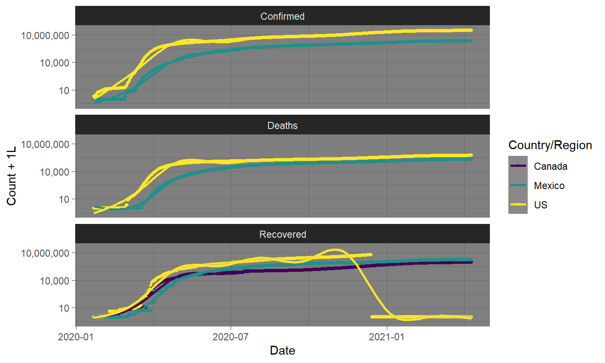

R Bootcamp 2020
Plots
Packages
Must have
Extras to check out
Thought Exercise:
What are we trying to do with graphics?
Example: What are the components?
Graphics Systems
There are esentially 3 graphics systems in R:
- Base graphics
- Grid graphics
- ggplot2
Base Graphics
Don’t waste your time
Base Graphics
An even bigger waste of time
Grammar of Graphics

Gramar of Graphics
Building blocks of data visualizations.
- Aesthetics
- location
- size
- shape
- height
- width
- area
- color
- fill
- border
- transparency
time/animation
Gramar of Graphics
Building blocks of data visualizations.
- Aesthetics…
- Data
- map variables from data to aesthetics
- Summarizations
- outliers, Q1, Median Q3, outliers → Box plots
- binning → histograms
- density → density, violin, etc.
- smoothing: loess, splines, etc.
Gramar of Graphics
Building blocks of data visualizations.
- Aesthetics…
- Data
- Coordinate System
- Cartesian
- Geographic
- Polar
- Scaling
- Logarithmic
- Square-root
Gramar of Graphics
Building blocks of data visualizations.
- Aesthetics…
- Data
- Coordinate System
- Facets
- Grid
- Strip
- Wrap
Gramar of Graphics
Building blocks of data visualizations.
- Aesthetics…
- Data
- Coordinate System
- Facets
- Grid
- Strip
- Wrap
Terminology
- Data
What we are visualizing
- Geometry
The type of visualization.
- Mapping
How variables translate variables from data to aesthetic components of the graph.
- Statistic
If and how variables are to be summarized prior to being mapped to aesthetics.
Terminology
- Coordinates
How Axes are displayed.
- Facets
How a visualization is to be broken into parts.
- Position
How elements should be positioned; sitter, stacked, dodge, etc.
Example
library(ggplot2)
load("data/covid.data.long.final.RData")
plot1 <-
ggplot(data=covid.data.long.final) + #< Our 'data' component
geom_point( #< a point geometry layer
aes( x = Date #< our mappings
, y = Confirmed
, col = `Country/Region`
)
, stat = 'unique' #< our statistic
, position = 'identity' #< how to position data
) +
scale_color_viridis_d(guide=FALSE)
Example
plot1
We can do better.
Layers
- Layers
Layers are the combination of a geometry, data, mapping, statistic, and position.
Graphs may have and often do have many layers in them.

Layered Example
library(ggplot2)
load("data/covid.data.long.final.RData")
plot.data <- covid.data.long.final %>%
filter(iso3c %in% !!c('USA', 'CAN', 'MEX')) %>%
pivot_longer( Confirmed:Recovered
, names_to = 'Metric'
, values_to= 'Count'
)
plot2 <-
ggplot(data= plot.data
, aes( x = Date
, y = Count
, col = `Country/Region`
)
) +
geom_point( stat = 'unique'
, size = 1 #< An explicit aesthetic.
) +
geom_smooth(method='gam', formula=y ~ s(x, bs = "cs")) + #< new 'smooth' layer
facet_wrap(~Metric, 3, 1) #< faceting
Layered Example
Scales
Scales
A comment about color
plot3 + scale_color_viridis_d()
## Fix Canada
plot4 <-
ggplot(data= plot.data %>% filter(is.na(`Province/State`))
, aes( x = Date
, y = Count + 1L
, col = `Country/Region`
)
) +
geom_point( stat = 'unique'
, size = 1 #< An explicit aesthetic.
) +
geom_smooth(method='gam', formula=y ~ s(x, bs = "cs")) + #< new 'smooth' layer
facet_wrap(~Metric, 3, 1) +#< faceting
scale_y_log10(labels=scales::label_comma()) +
scale_color_viridis_d()
Themes
Themes are what control the non-data elements of a visualization
- Axes
- Grid
- Background
- Legend positioning, etc.
Built-in themes
theme_greytheme_bwtheme_linedrawtheme_light
theme_darktheme_minimaltheme_classic
Theme Example, Dark
plot4 + theme_dark()

Theme Example, Minimal
plot4 + theme_minimal()
Customizing themes
plot4 + theme_minimal() +
theme(legend.position="top"
, strip.background=element_rect(fill='black')
, strip.text= element_text(color='gold', face='bold'))
Reuse your theme
my.theme <- theme_minimal() + theme(legend.position="top",
strip.background=element_rect(fill='black'),
strip.text= element_text(color='gold', face='bold'))
ebola.plot1+my.theme
## Error in eval(expr, envir, enclos): object 'ebola.plot1' not found
The Shortcut qplot (quick plot)
qplot( Date, Count + 1L, color = `Country/Region`
, shape= Metric
, data=plot.data %>% filter(Date > "2021-04-01")) +
geom_line()+
scale_y_log10()
Exercises with Bordeaux Wines
- Parker Points vs. Coates Points
- Parker Points or Coates Points vs. Price
- Price by First Growth or Cult Wine
- A plot that includes at least
- Price
- Parker Points or Coates Points
- two of First Growth, Cult Wine, Pomerol, or Vintage Superstar
10:00
Solution: Preliminary
Fix the wine data so that the labels for indicators are a little nicer.
library(magrittr)
#assign back pipe
wine <- read.csv("data/Bordeaux.csv") %>%
mutate_at( vars(FirstGrowth:VintageSuperstar)
, ~forcats::fct_recode(factor(.), No='0', Yes='1')
)
Solution: Parker Points vs. Coates Points
qplot(data=wine, ParkerPoints, CoatesPoints, geom='point')
Solution: Parker Points vs. Price
qplot(data=wine, ParkerPoints, Price, geom='point') +
labs(y = 'Price(\uA3)', x="Robert Parker Rating (Max:100)")
Solution: Price by First Growth Box plot
qplot(data=wine, x=FirstGrowth, y=Price
, geom='boxplot', group=FirstGrowth) #< must include a group.
Solution: Price by First Growth Density
ggplot(data=wine) + geom_density(aes(x=Price, fill=FirstGrowth), alpha=0.5)+
scale_fill_viridis_d()
Solution: Price by First Growth Violins
ggplot(data=wine) + geom_violin(aes(y=Price, x=FirstGrowth, fill=FirstGrowth))+
scale_fill_viridis_d()
Solution: Price by First Growth Guitar Plot
ggplot(data=wine) + geom_violin(aes(y=Price, x=FirstGrowth, fill=FirstGrowth))+
scale_fill_viridis_d()

Solution: all the variables.
all.the.variables <- ggplot(data=wine) +
# Five variables here.
geom_point(aes( x = ParkerPoints, y = CoatesPoints
, col = Price, shape = Pomerol:VintageSuperstar
)
# Jitter the position to avoid over-plotting
, position=position_jitter(.4, .4))+
# grid for two more variables
facet_grid( FirstGrowth~CultWine
, labeller=label_both
) + #^ Labels have both variable name and level.
# Make colors pop for high value wines.
scale_color_viridis_c(trans = 'log10', option="inferno", end=0.75) +
labs( x = "Robert Parker Rating (Max:100)"
, y = "Clive Coates Rating (Max:20)"
, color = 'Price(\uA3)')
Solution: all the variables.
all.the.variables